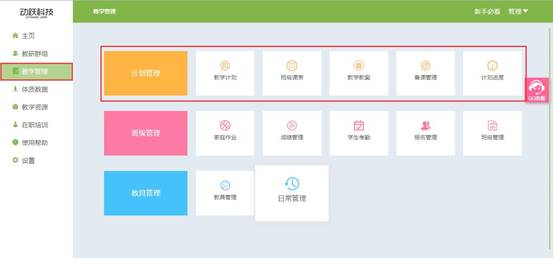

<div class="title">教学管理简介</div>

<div class="on">包括教学计划、班级课表、教学教案、备课管理、计划进度。帮助教师管理整个教学过程，首先制定教学计划，安排单元计划，根据教师教授内容安排计划进度后，即可查看对应班级的授课教案，满足教师的授课需求。</div>


<script id="_youkujs_" type="text/javascript" src="//player.youku.com/jsapi"></script>
<script type="text/javascript" src="../statics/js/each/helpvideo.js"></script>